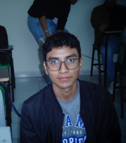

Sergio Servando Prado Lozano
Ingeniería en Sistemas Computacionales
San Pedro de las Colonias, Coahuila, México | Tel: 872-156-1144 | pradosergioslcs275@gmail.com

Resumen Profesional
Actualmente soy practicante de la carrera de Ingeniería en Sistemas Computacionales. Me gusta bastante trabajar con bases de datos y desarrollar aplicaciones de escritorio o páginas web usando HTML y CSS; aunque todavía me cuesta un poco la lógica con JavaScript, le pongo empeño y sigo practicando. Me gustaría seguir aprendiendo sobre desarrollo web y también más en el área de servidores que me gusta mucho.
Habilidades Técnicas
- Lenguajes y Tecnologías: C#, PHP, Python, Kotlin, JavaScript, HTML, CSS
- Bases de Datos: MySQL, SQL Server, MariaDB
- Herramientas y Entornos: Git, GitHub, VS Code, PowerShell, Bash
- Áreas de Interés: Desarrollo Web, Bases de Datos, Desarrollo Móvil y Escritorio
Experiencia Académica
Instituto Tecnológico Superior de San Pedro de las Colonias — Programador / Líder de Proyecto (02/2025 - 06/2025)
- Lideré el desarrollo integral del videojuego web "Aprende Jugando" para fortalecer habilidades lógico-matemáticas y lingüísticas.
- Ayudé en la maquetación responsiva y lógica de interactividad utilizando HTML, CSS y JavaScript.
- Configuré y administré bases de datos locales para la persistencia del progreso de los usuarios.
- Coordiné pruebas piloto con un grupo de 25 a 30 usuarios para validar el rendimiento técnico.
Proyectos Académicos
Sistema Escolar — Repositorio en GitHub
Desarrollo colaborativo de un sistema integral desde cero para optimizar la gestión de datos de trabajadores, maestros y alumnos, incrementando la eficiencia en la organización. Implementado en Fedora Server y migrado a DOM Cloud.
Educación
- Preparatoria Aguanueva (2020 - 2022)
- Instituto Tecnológico Superior de San Pedro de Las Colonias, Ingeniería en Sistemas Computacionales (08/2022 - 12/2026)
Cursos y Capacitaciones
- Desarrollo PHP -- Dev.f (Curso auspiciado por Infotec), 2025.
- Idioma Inglés -- (Nivel B2 Intermedio) avalada por el Instituto Tecnológico Superior de San Pedro de las Colonias, 2025.
Logros y Participaciones
- Participación en el HackMTY 2024
- Participación en el Gusofton 2023
Idiomas
- Español: Idioma materno
- Inglés: Nivel B2 Intermedio (Certificado avalado por el Instituto Tecnológico Superior de San Pedro de las Colonias)
Actividades y Ejercicios
Descripción de las tareas, ejercicios de clase y entregables: